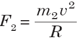

software development level 5
software development level 5Apply Basic Algebra And Trigonometry
Trigonometry studies relationship involving lengths and angle of a triangle.
The techniques in trigonometry are used for finding relevance in navigation particularly satellite systems and astronomy, naval and aviation industries, oceanography, land surveying, and in cartography (creation of maps). Now those are the scientific applications of the concepts in trigonometry, but most of the mathematics we study would seem (on the surface) to have little real-life application. Trigonometry is really relevant in our day to day activities.
Trigonometry is the study of how the sides and angles of a triangle are related to each other. A rotation angle is formed by rotating an initial side through an angle, about a fixed point called vertex, to terminal position called terminal side.
Trigonometry concepts
Trigonometry drawn in what is called standard position if the initial side is on the positive x-axis and the vertex of the angle is at the origin.

Solving a triangle is to find the length of its sides and measures of its angles. There are two methods for solving a triangle: cosine law and sine law
Cosine law (also known as cosine formula or cosine rule) relates the lengths of sides to the cosine of one of the angles. Consider the following triangle:
Consider the following triangle:
How long is the side c in the following figure?
Find the angle C
The sine law (or sine formula or sine rule) is an equation relating the lengths of the sides of a triangle to the sine of its angles.
If a,b,c are the lengths of the sides of a triangle and ABC , , are the opposite angles respectively, then the sine law is
Calculate side c
Calculate angle B
Many real situations involve right triangles. Using angles and trigonometric functions, we can solve problems involving right triangle. We have already seen how to solve a triangle.
You can use right triangles to find distances, if you know an angle of elevation or an angle of depression. The figure below shows each of these kinds of angles.
Suppose that an observer is standing at the top of a building and looking straight ahead at the birds (horizontal line). The observer must lower his/her eyes to see the car parked (slanting line). The angle formed between the two lines is called the angle of depression.
Suppose that an observer is standing at the top of a building and looking straight ahead at the birds (horizontal line). The observer must raise his/her eyes to see the airplane (slanting line). The angle formed between the two lines is called the angle of elevation.
The angle of elevation of the top of a pole measures 48 from a point on the ground 18 metres away from its base. Find the height of the flagpole.

An airplane is flying at a height of 2 kilometres above the level ground. The angle of depression from the plane to the foot of a tree is 15 0 . Find the distance that the air plane must fly to be directly above the tree.
Each quadrant measures 90 degrees, means that the entire circle measures 360 degrees or radians.
Many real situations involve right triangle. Using angles and trigonometric functions, we can solve problems involving right triangle like:
- Angles of elevation and angle of depression
Physics introduction
Physics is one of the disciplines of natural science that studies about the various aspects of the matters and energy. The major topics those are studied in physics are mechanics, electricity, magnetism, heat, sound, light and other radiation, and the structure of atoms. In addition, physics also explains the evolution, structure, and functions of various elements of the universe.
Sourse of energy in the world
Origins of the power used for transportation, for heat and light in dwelling and working areas, and for the manufacture of goods of all kinds, among other applications. The development of science and civilization is closely linked to the availability of energy in useful forms. Modern society consumes vast amounts of energy in all forms: light, heat, electrical, mechanical, chemical, and nuclear. The rate at which energy is produced or consumed is called power, although this term is sometimes used in common speech synonymously with energy.
In addition, the most easily accessed geothermal resources, natural hot springs and geysers, will not last for more than a few decades if exploited for energy on a large scale. Estimates vary widely as to how long fossil fuels, oil, coal, and natural gas will last. These estimates depend on assumptions about how much fossil fuel remains in the ground, how fast it will be used, and how much money and effort will be spent to recover it. However, most estimates agree that, if present rates of consumption continue, proven oil and natural gas reserves will run out in this century, while coal reserves will last more than 200 years. Once they are used, these energy sources cannot be replaced.
Identify types of energy according to the sources
-
Fossil fuel

-
Nuclear fuel
Most nuclear fuel heavy fissil elements that are capable of nuclear fission. when these fuels are struck by neautrons, they are in turn capable of emiting neautrons when they break apart. this makes possible a self-sustaining chain reaction that releases energy with a controlled rate in a nuclear reactor or with a very rapid uncontrolled rate in nuclear weapon
Motion in orbits
Gravitation based on Newton's Law
Gravity is the mysterious force that makes everything fall down towards the Earth. But after research it has turned out that all objects have gravity. Its just that some objects, like the Earth and the Sun, have a stronger gravity than others. How much gravity an object has depends its mass. It also depends on how close you are to the object. The closer you are, the stronger the gravity.
Gravity is very important to our everyday lives. Without Earths gravity we would fly right off it. If you kicked a ball, it would fly off forever. While it might be fun to try for a few minutes, we certainly cant live without gravity. Gravity also is important on a larger scale. It is the Suns gravity that keeps the Earth in orbit around the Sun. Life on Earth needs the Suns light and warmth to survive. Gravity helps the Earth to stay at just the right distance from the Sun, so its not too hot or too cold.
NEWTONS LAW OF GRAVITATION
This is also called the universal law of gravitation or inverse square law. It states that the gravitational force of attraction between two masses m1 and m2 is directly proportional to the product of masses and inversely proportional to the square of their mean distance apart.
Properties of Gravitation Force
- It is independent of the medium between the particles while electric and magnetic forces depend on the nature of the medium between the particles.
- It holds good over a wide range of distances. It is found true for interplanetary to interatomic distances.
- It is a central force, i.e. it acts along the line joining the centres of two interacting bodies.
- It is a two-body interaction, i.e. gravitational force between two particles is independent of the presence or absence of other particles; so, the principle of superposition is valid, i.e. force on a particle due to number of particles is the resultant of forces due to individual particles
- On the contrary, nuclear force is a many-body interaction.
Planetary motion according to Keplers laws
KEPLERS LAWS OF PLANETARY MOTION
Planets are large natural bodies rotating around a star in definite orbits. The planetary system of the star sun, called solar system, consists of nine planets. mercury, venus, earth, mars, jupiter, saturn, uranus, neptune and pluto. Out of these planets mercury is the smallest, closest to the sun. jupiter is the largest and has the maximum number of moons. Venus is closest to the earth and the brightest planet. Kepler, after a life time study, worked out three empirical laws which govern the motion of these planets and are known as Keplers laws of planetary motion.
1st Law This law called the law of orbits and state that planets move in ellipse with the sun as one of thier force, it can also be stated as planets describe ellipses about the sun as one focus.
2rd Law This law called the law of areas and state that the line joining the sun and the planet sweeps out equal areas in equal period on time. According to the law, if the time taken to move from A to B equal the time from C to D. Then S 1 = S 2
3rd Law This law of period states that the square of the period T of revolution of any planet is proportional to the cube of it means distance R from the sum

VERIFICATION OF KEPLERS THIRD LAW OF PLANETARY MOTION
- Assuming that a planets orbit is circular (which is not exactly correct but is a good approximation in most cases), then the mean distance from the sun is constant radius. Suppose, a planet of mass m2 moving around the sun of mass m1. If the motion of the planet is circular, there are two types of forces:
-
(a) Gravitational force of attraction F1
between the sun and the planet.

-
b) Cetripetal force F2 responsible for keeping the planet moving in circular motion
aroung the sun

For the planet to move around the sun in orbit of constant radius F1 = F2
Mobile Phone and radio communication
Interpret concepts based on transmission system
Transmission system:
The communication is the way of expressing our thoughts. In other words, communication means sending or receiving message from one end to other. We can express our feelings to others by speaking, writing or silent indications. All living beings communicate to each other in different ways. They have different types of voices and they understand meaning of voice of their species. Human has also developed his dialect to communicate with others. We learn different languages to understand meaning of others dialects.
Devices used to talk, or to send message one end to other, or from one person to other are called means of communication. Means of Communication are the most necessary part of modern lifestyle. In modern age, there are many types of means of communications like newspaper, Telephone, Mobile, TV, Internet etc. They play very important role in our daily life activities. This concept is closely related to the concepts of blood circulation (in Biology and Medicine), transport networks, transmission of information etc.
Description of terms used in transmission system
In telecommunication, a communication system is a collection of individual communication networks, transmission systems, relay stations tributary stations and Data Terminal Equipment (DTE) usually capable of interconnection and interoperation to form an integrated whole.In the transmission section, first of all, the source generated information is fed to the input transducer, which converts energy of one form to another form, usually in electrical form. This electrical signal or base band signal is sent to the transmitter.
Transmitter: Transmitter modifies the information signal for
efficient transmission. It modulates the information signal with a high frequency carrier.
After processing the signal transmitter transmits the signal, through channel to the receiver.
Channel: Channel, media or path implies the medium through which
the message travels from the transmitter to the receiver. A channel acts partly as a filter to
attenuate the signal and distorts its waveform. The signal attenuation increases with the length
of the channel. There are different types of channels for different communication systems, such as
wire, coaxial cable, wave-guide, optical fiber or radio link through which transmitter output is sent.
Receiver: Receiver reprocesses the signal received from the channel by undoing
the signal modifications made at the transmitter and the channel. The receiver output is fed to the output
transducer, which converts the electrical signal to its original form. By this way, the signal reached to
its destination, to which the message is communicated.
Digital communication: Digital communication system exchange (both transmit and receive)
information to /from digital sources. A digital (information) source produces a finite set of possible messages.
Typewriter is a good example of a digital source. There is a finite no. of characters that can be emitted by this source.
Analog communication: Analog communication system exchange
(both transmit and receive) information to /from analogue sources.
A microphone is a good example of an analogue source. An analogue information source produces messages that are defined on a continuum.
Why do we use digital not analogue?
Digital communication has a number of advantages:- Relatively inexpensive digital circuits may be used.
- Digital systems are relatively easy to design and can be fabricated on IC chips.
- Information storage is easy.
- Operation can be programmable to update with newly upcoming technologies.
- Privacy is preserved by using data encryption
- Greater dynamic range is possible
- Data from voice, video and data sources may be merged and transmitted over a common digital transmission system. i.e. it is easy to multiplex several digital signals
- In long distance communication system, noise does not accumulate from repeater to repeater.
- Error detection and correction schemes can be employed by using coding techniques.
Limitations of Digital communication system
Generally, more bandwidth is required than that for analogue system.- Synchronization is required, which calls for more sophisticated device and costs more. A/D converter We use analogue to digital converter, to convert analogue signals to digital signals.
Sampling In this process, Continuous-time signal is converted to
Discrete-time signal obtained by taking samples of the continuous-time signal at discrete-time instants.
Quantization In this process, a Discrete-time Continuous-
valued signal is converted into a Discrete-time Discrete-valued (digital) signal.
The sampled signal is rounding off to the fourth nearest value which is permitted
for transmission by the system. The process of rounding off is called Quantization,
while the possible levels permitted for transmission are called Quantizing levels.
Coding
In the coding process, each discrete value is represented by 8-bit binary sequence e.g. 10010101.
It consists of combinations of 0 and 1.
Describe Principle of cellular radio and Structure of cellular network.
The cellular concept was a major breakthrough in solving the problem of spectral congestion and user capacity. It offered very high capacity output in a limited spectrum allocation without any major technological changes. The cellular concept is a system-level idea which calls for replacing a single, high power transmitter (large cell) with many low power transmitters (small cells), each providing coverage to only a small portion of the service area. Each base station is allocated a portion of the total number of channels available to the entire system, and nearby base stations are assigned different groups of channels so that all the available channels are assigned a relatively small number of neighbouring base stations.
Principle of cellular radio and Structure of cellular network
Neighbouring base stations are assigned different groups of channels so that the
interference between base stations (and the mobile users under their control) is
minimized.
By systematically spacing base stations and their channel groups throughout a market,
the available channels are distributed throughout the geographic region and may be reused
as many times as necessary so long as the interference between co-channel stations is kept
below acceptable levels.
Illustration of structure of cellular network.
An overall cellular network contains a number of different elements from the base transceiver station (BTS) itself with its antenna back through a base station controller (BSC), and a mobile switching centre (MSC) to the location registers (HLR and VLR) and the link to the public switched telephone network (PSTN). Of the units within the cellular network, the BTS provides the direct communication with the mobile phones. There may be a small number of base stations linked to a base station controller. This unit acts as a small centre to route calls to the required base station, and it also makes some decisions about which base station is the best suited for a particular call.
Identify types of modulations (AM, FM, and PM) based on communication systems.
Modulation is a technique used for encoding information into a RF channel. Typically the process of modulation combines an information signal with a carrier signal to create a new composite signal that can be transmitted over a wireless link. In theory, a message signal can be directly sent into space to a receiver by simply powering an antenna with the message signal. However, message signals typically dont have a high enough bandwidth to make efficient direct propagation. In order to efficiently transmit data, the lower frequency data must be modulated onto a higher frequency wave.

The high frequency wave acts as a carrier that transmits the data through space
to the receiver where the composite wave is demodulated and the data is recovered.
There are a few general types of modulation; Frequency Modulation (FM), Phase
Modulation (PM) and Amplitude modulation (AM).
This is a kind of modulation which is used in every high broadcasts. The frequency of the carrier is altered at a rate equal to the frequency of the audio frequency but the amplitude remains constant.
Frequency modulation is widely used for FM radio broadcasting. It is also used in telemetry, radar, seismic prospecting monitoring new-borns (for seizures via Electroencephalography), two-way radio systems, music synthesis, magnetic tape-recording systems and some video-transmission systems. In radio transmission, an advantage of frequency modulation is that it has a larger signal-to-noise ratio and therefore rejects radio frequency interference better than an equal power amplitude modulation (AM) signal. For this reason, most music is broadcast over FM radio.
Amplitude modulation (AM)In amplitude modulation, the information signal is used to vary the amplitude of the carrier so that it follows the wave shape of information signal. Here, before the information is transmitted, it is first mixed to a carrier signal so that it can be transmitted over a long distance with low attenuation.
Phase modulation (PM)Phase modulation is a form of modulation that encodes information as variations in the instantaneous phase of the carrier wave. It is widely used for transmitting radio waves and is an integral part of many digital transmission coding schemes that underlie a wide range of technologies like WiFi, GSM and satellite television. In this type of modulation, the amplitude and frequency of the carrier signal remains unchanged after PM. The modulating signal is mapped to the carrier signal in the form of variations in the instantaneous phase of the carrier signal.Phase modulation is closely related to frequency modulation and is often used as intermediate step to achieve FM.
Describe Post, telegraph and telephone (PTT) according to telecommunication
A postal, telegraph and telephone service (or PTT) is a government agency responsible for postal mail, telegraph and telephone services. Such monopolies existed in many countries, though not in North America or Japan. Many PTTs have been partially or completely privatized in recent years. In some of those privatizations, the PTT was renamed completely, whereas in others, the name of the privatized corporation has been only slightly modified. Postal services transport mail and small packages to destinations around the world, and they are mostly public corporations. However, there has been increased privatization of postal operators in the past 20 years, and government restrictions on private postal services have eased. Postal authorities are often also involved in telecommunications, logistics, financial services and other business areas.
POST, TELEGRAPH AND TELEPHONE (PTT)A telegraph is a communication system in which information is transmitted over a wire through a series of electrical current pulses, usually in the form of Morse code. The basic components include a source of direct current, a length of wire or cable, and a current-indicating device such as a relay, buzzer or light bulb.
Telephony Is the technology associated with the electronic transmission of voice, fax, or other information between distant parties using systems historically associated with the telephone, a handheld device containing both a speaker or transmitter and a receiver. With the arrival of computers and the transmission of digital information over telephone systems and the use of radio to transmit telephone signals, the distinction between telephony and telecommunication has become difficult.
Climate change and green house effect
SCIENTIFIC PROCESS BEHIND CLIMATE CHANGE--Black body radiation
Try to get two clothes of the same kind (similar material) but of different colour black and White
- Soak them in water at the same time
- Display them to places of the same sunlight intensity
- Check them after like 20 min, 30 min, or 40 min
- Observe how they are drying up
- Make a comprehensive report about your findings
- Relate your findings to the concept of black body and hence define a black body
- From your deductions, explain what happens when the temperature of a black body increase
- You can share your observations and findings with your friends and even to your teacher
- An object that absorbs all radiation falling on it and therefore emitting radiation in whole spectrum of wavelengths is called a blackbody.
At equilibrium temperature a black body has a characteristic frequency spectrum that depends only on its temperature.
A perfect blackbody is one that absorbs all incoming light and does not reflect any. At room temperature, such an object would appear to be perfectly black (hence the term blackbody). However, if heated to a high temperature, a blackbody will begin to glow with thermal radiation.
Sun produces heat of very high intensity that is spread and then received by all surrounding objects. These objects include all the planets and other objects around it.
The intensity of the sun (at the top of the earths atmosphere) is approximately 1400 W/m2 also known as the solar constant. The amount received on the earth surface is slightly below 1400 w/m2.
The main reasons for variation in intensity include: The shape of the earth: The earth has a spherical shape and therefore the sunlight is more spread out near the poles because it is hitting the earth at an angle, as opposed to hitting the earth straight-on at the equator.
There are also fewer atmospheres at the equator, allowing more sunlight to reach the earth. Therefore, the intensity varies depending on the geographical latitude of the earths location.
The earth's rotation: all areas are not consistently exposed to sunlight. Areas that are experiencing 'night time' are not receiving a lot of the sun's power; therefore the time of the day or night will affect the solar constant.
The angle of the surface to the horizontal at that particular location: When the Sun is directly overhead, its rays strike Earth perpendicular to the ground and so deliver the maximum amount of energy. When the Sun is lower in the sky, a sunbeam strikes the ground at an angle and so its energy is "spread out" over a larger area The solar constant represents the mean amount of incoming solar electromagnetic radiation per unit area on the earth's surface. This constant takes into account all types of solar radiation, including UV and infrared.
The accuracy of the solar constant is questionable due to the following generalizations: This radiation is assumed to be incident on a plane perpendicular to the earth's surface. It is assumed that the earth is at its mean distance from the sun.
Our seasons also determine how much Suns radiation strikes a square meter of ground in a given place on the planet's surface at a given time of the year. The suns radiation is maximum in the summer and it is minimum in winter.
Scientists use a quantity called "albedo" to describe the degree to which a surface
reflects light that strikes it. It can be calculated by the ratio of reflected radiation
from the surface to the incident radiation upon it.

There has been variation in the atmospheric conditions in a given time. This has affected the seasons leading to a less output of our produce especially from agriculture, fishing and other activities. These changes are sometimes for a short time but also may take a long time.
Some of these changes result from our practices like farming, industrialization, urbanization, mining and other infrastructure developments.
Care should be taken so as these changes in the atmospheric conditions can be avoided.
Climate is usually defined as the "average weather" or more rigorously, as the statistical description in terms of the mean and variability of relevant quantities over a period of time ranging from months to thousands of years.
Weather is measured in terms of the following parameters:wind, temperature, humidity, atmospheric pressure, cloudiness, and precipitation. In most places, weather can change from hour-to-hour, day-to-day, and season-to-season. Climate can be described as the sum of weather. While the weather is quite variable, the trend over a longer period, the climate, is more stable.
Database security
Introduction to database security
Database security refers to the collective measures used to protect and secure a database or database management software from illegitimate use and malicious threats and attacks.
It is a broad term that includes a multitude of processes, tools and methodologies that ensure security within a database environment.
Database security covers and enforces security on all aspects and components of databases. This includes:
- Data stored in database
- Database server
- Database management system (DBMS)
- Other database workflow applications
Database security is generally planned, implemented and maintained by a database administrator and or other information security professional.
Some of the ways database security is analyzed and implemented include:
- Restricting unauthorized access and use by implementing strong and multifactor access and data management controls.
- Load/stress testing and capacity testing of a database to ensure it does not crash in a distributed denial of service (DDoS) attack or user overload.
- Physical security of the database server and backup equipment from theft and natural disasters.
- Reviewing existing system for any known or unknown vulnerabilities and defining and implementing a road map/plan to mitigate them.
Describe database security concepts and standards
Definition of Elements Relating to Database Security
A threat is defined as any event that may compromise the confidentiality, integrity, and/or availability of information assets
Threat consists of a combination of the following four elements: role player that is the source of threat, the information assets that must be protected from the threat, the method of unauthorized access, and the resulting unauthorized action.
(Example: Illegal access of database management information by ordinary users exploiting the vulnerability of the database.)
The persons involved in database operations, their respective roles, and the role player who may become the source of threat should be defined.
Information assets that must be protected are defined as information stored in a database server.
Information assets are valued according to the impact incurred upon the loss of confidentiality and/or unauthorized use.
Means (method) is the way that unauthorized activity is perpetrated by the role player upon information assets. Knowing the means will lead to an understanding of effective controls to mitigate the threat. Below is a list of some potential means.
- packet eavesdropping
- password dictionary attack
- stealing ID/password via social engineering
- unauthorized access of DBMS information by exploiting errors in settings
- unauthorized access of DBMS information by exploiting DBMS vulnerability
- unauthorized access of DBMS information by modifying database files
- Illegal access to ID/password by using DB management information
- creating backdoors
- unauthorized access of DBMS information by creating unauthorized DBMS administrator or operator account
- unauthorized removal of information through an unauthorized route
- unauthorized access of DBMS information by modifying management information
- SQL execution with the intent of disrupting service
- unauthorized removal of information through an authorized route
Unauthorized action refers to the illegal activity performed by the role player on the information assets.
- Unauthorized modification or destruction of DBMS information
- Unauthorized access of DBMS information
Perform system security
Purpose of database security
All systems have ASSETS and security is about protecting assets. The first thing, then, is to know your assets and their value.
Data security is built on the confidentiality, integrity and availability of data and ta a certain extent on access control and non-reputation. Is also called CIA triad.
- Various legal and ethical issues regarding the right to access certain information for example, some information may be deemed to be private and cannot be accessed legally by unauthorized organizations or persons. In the United States, there are numerous laws governing privacy of information.
- Policy issues at the governmental, institutional, or corporate level as to what kinds of information should not be made publicly available for example, credit ratings and personal medical records.
- System-related issues such as the system levels at which various security functions should be enforced for example, whether a security function should be handled at the physical hardware level, the operating system level, or the DBMS level.
- The need in some organizations to identify multiple security levels and to categorize the data and users based on these classificationsfor example, top secret, secret, confidential, and unclassified. The security policy of the organization with respect to permitting access to various classifications of data must be enforced.
- Threats to databases, Threats to databases can result in the loss or degradation of some or all of the following commonly accepted security goals: integrity, availability, and confidentiality.
- Loss of confidentiality. Database confidentiality refers to the protection of data from unauthorized disclosure. The impact of unauthorized disclosure of confidential information can range from violation of the Data Privacy Act to the jeopardization of national security. Unauthorized, unanticipated, or unintentional disclosure could result in loss of public confidence, embarrassment, or legal action against the organization.
- Loss of integrity. Database integrity refers to the requirement that information be protected from improper modification. Modification of data includes creation, insertion, updating, changing the status of data, and deletion.b
Integrity is lost if unauthorized changes are made to the data by either intentional or accidental acts. If the loss of system or data integrity is not corrected, continued use of the contaminated system or corrupted data could result in inaccuracy, fraud, or erroneous decisions.
The idea of security policies includes many dimensions. Broad considerations include requiring backups to be done regularly and stored off-site. Narrow table or data considerations include ensuring that unauthorized access to sensitive data, such as employee salaries, is precluded by built-in restrictions on every type of access to the table that contains them. This topic discusses security policies in the following sections:
- System Security Policy
- Data Security Policy
- User Security Policy
- Password Management Policy
- Auditing Policy
- A Security Checklist
This section describes aspects of system security policy, and contains the following topics:
- Database User Management
- User Authentication
- Operating System Security
Database users are the access paths to the information in an Oracle database. Therefore, tight security should be maintained for the management of database users. Depending on the size of a database system and the amount of work required to manage database users, the security administrator may be the only user with the privileges required to create, alter, or drop database users. On the other hand, there may be a number of administrators with privileges to manage database users. Regardless, only trusted individuals should have the powerful privileges to administer database users.
User AuthenticationDatabase users can be authenticated (verified as the correct person) by Oracle using database passwords, the host operating system, network services, or by Secure Sockets Layer (SSL).
Operating System SecurityThe following security issues must also be considered for the operating system environment executing Oracle and any database applications:
- Database administrators must have the operating system privileges to create and delete files
- Typical database users should not have the operating system privileges to create or delete files related to the database.
- If the operating system identifies database roles for users, the security administrators must have the operating system privileges to modify the security domain of operating system accounts.
Data security includes the mechanisms that control the access to and use of the database at the object level. Your data security policy determines which users have access to a specific schema object, and the specific types of actions allowed for each user on the object.
For example, the policy could establish that user scott can issue SELECT and INSERT statements but not DELETE statements using the emp table. Your data security policy should also define the actions, if any, that are audited for each schema object.
Some means of implementing data security include system and object privileges, and through roles. A role is a set of privileges grouped together that can be granted to users.
Views can also implement data security because their definition can restrict access to table data. They can exclude columns containing sensitive data.
Another means of implementing data security is through fine-grained access control and use of an associated application context. Fine-grained access control is a feature of Oracle Database that enables you to implement security policies with functions, and to associate those security policies with tables or views. In effect, the security policy function generates a WHERE condition that is appended to relevant SQL statements, thereby restricting user access to rows of data in the table or view. An application context is a secure data cache for storing information used to make access control decisions. (Access to emails for example)
- General User Security
- End-User Security
- Administrator Security
- Application Developer Security
- Application Administrator Security
For all types of database users, consider the following general user security issues:
- Password Security
- Privilege Management
If user authentication is managed by the database, security administrators should develop a password security policy to maintain database access security. For example, database users should be required to change their passwords at regular intervals, and of course, when their passwords are revealed to others. By forcing a user to modify passwords in such situations, unauthorized database access can be reduced.
Passwords are always automatically and transparently encrypted during network (client/server and server/server) connections, using a modified DES (Data Encryption Standard) algorithm, before sending them across the network.
Security administrators should consider issues related to privilege management for all types of users. For example, in a database with many usernames, it may be beneficial to use roles (which are named groups of related privileges that you grant to users or other roles) to manage the privileges available to users. Alternatively, in a database with a handful of usernames, it may be easier to grant privileges explicitly to users and avoid the use of roles.
Security administrators managing a database with many users, applications, or objects should take advantage of the benefits offered by roles. Roles greatly simplify the task of privilege management in complicated environments.
Security administrators must define a policy for end-user security. If a database has many users, the security administrator can decide which groups of users can be categorized into user groups, and then create user roles for these groups. The security administrator can grant the necessary privileges or application roles to each user role, and assign the user roles to the users. To account for exceptions, the security administrator must also decide what privileges must be explicitly granted to individual users.
Security administrators should have a policy addressing database administrator security. For example, when the database is large and there are several types of database administrators, the security administrator may decide to group related administrative privileges into several administrative roles. The administrative roles can then be granted to appropriate administrator users. Alternatively, when the database is small and has only a few administrators, it may be more convenient to create one administrative role and grant it to all administrators.
Security administrators must define a special security policy for the application developers using a database. A security administrator could grant the privileges to create necessary objects to application developers. Or, alternatively, the privileges to create objects could be granted only to a database administrator, who then receives requests for object creation from developers
In large database systems with many database applications, you might consider assigning application administrators. An application administrator is responsible for the following types of tasks:
- Creating roles for an application and managing the privileges of each application role
- Creating and managing the objects used by a database application
- Maintaining and updating the application code and Oracle procedures and packages, as necessary
Often, an application administrator is also the application developer who designed an application. However, an application administrator could be any individual familiar with the database application.
Database security systems that are dependent on passwords require that passwords be kept secret at all times. Since passwords are vulnerable to theft, forgery, and misuse, Oracle Database has DBAs and security officers control password management policy through user profiles, enabling greater control over database security.
Security administrators should define a policy for the auditing procedures of each database. You may, for example, decide to have database auditing disabled unless questionable activities are suspected. When auditing is required, the security administrator must decide what level of detail to audit the database; usually, general system auditing is followed by more specific types of auditing after the origins of suspicious activity are determined. In addition to standard database auditing, Oracle supports fine-grained auditing using policies that can monitor multiple specific objects, columns, and statements, including INDEX.
This security checklist provides guidance on configuring Oracle Database in a secure manner by adhering to and recommending industry-standard "best security practices" for operational database deployments. In simple summary, before looking at the more detailed checklist: consider all paths the data travels and assess the threats that impinge on each path and node. Then take steps to lessen or eliminate both those threats and the consequences of a successful breach of security. Monitoring and auditing to detect either increased threat levels or successful penetration increases the likelihood of preventing or minimizing security losses.
After developing the software and the security measures to safeguard the data stored in the database. The performance of the software was tested against the security measures described/shown in figure 6 above. The result indicates that, the user can only gain access to the data after successfully being authenticated against all the CIA mechanism put in place and all assigned role are made available to the user. Similarly, the user is denied access if not authenticated.
Elaborate database security models
Definition of security modelsSecurity models are the formal description of security policies. Security models are useful tools for evaluating and comparing security policies.
Security models allow us to test security policies for completeness and consistency. They describe what mechanisms are necessary to implement a security policy. Security models are described in terms of the following elements:
- Subjects: Entities that request access to objects.
- Objects: Entities for which access request is being made by subjects.
- Access Modes: Type of operation performed by subject on object (read, write, create etc.).
- Policies: Enterprise wide accepted security rules.
- Authorizations Specification of access modes for each subject on each object.
- Administrative Rights: Who has rights in system administration and what responsibilities administrators have.
- Axioms: Basic working assumptions
Access control
The purpose of access control is to limit the actions or operations that a legitimate user of a computer system can perform. Access control constraints what a user can do directly, as well as what programs executing on behalf of the users are allowed to do. In this way access control seeks to prevent activity that could lead to a breach of security.
Authentication and authorization
Authentication
- Authentication is used by a server when the server needs to know exactly who is accessing their information or site
- Authentication is used by a client when the client needs to know that the server is system it claims to be.
- In authentication, the user or computer has to prove its identity to the server or client.
- Usually, authentication by a server entails the use of a user name and password. Other ways to authenticate can be through cards, retina scans, voice recognition, and fingerprints.
- Authentication by a client usually involves the server giving a certificate to the client in which a trusted third party such as VeriSign or Thawte states that the server belongs to the entity (such as a bank) that the client expects it to.
- Authentication does not determine what tasks the individual can do or what files the individual can see. Authentication merely identifies and verifies who the person or system is.
Authorization
- Authorization is a process by which a server determines if the client has permission to use a resource or access a file.
- Authorization is usually coupled with authentication so that the server has some concept of who the client is that is requesting access.
- The type of authentication required for authorization may vary; passwords may be required in some cases but not in others.
- In some cases, there is no authorization; any user may be use a resource or access a file simply by asking for it. Most of the web pages on the Internet require no authentication or authorization.
Encryption
- Encryption involves the process of transforming data so that it is unreadable by anyone who does not have a decryption key.
- The Secure Shell (SSH) and Socket Layer (SSL) protocols are usually used in encryption processes. The SSL drives the secure part of https:// sites used in e-commerce sites (like E-Bay and Amazon.com.)
- By encrypting the data exchanged between the client and server information like social security numbers, credit card numbers, and home addresses can be sent over the Internet with less risk of being intercepted during transit.
Unencrypted data, often referred to as plaintext, is encrypted using an encryption algorithm and an encryption key. This process generates cipher text that can only be viewed in its original form if decrypted with the correct key. Decryption is simply the inverse of encryption, following the same steps but reversing the order in which the keys are applied. Today's most widely used encryption algorithms fall into two categories: symmetric and asymmetric.
- Symmetric (secret key): Uses same key for both encryption and decryption
- Asymmetric (public key): Uses different key for encryption and decryption
Say I want to send you a private message, so I encrypt it using either one of these programs. Heres the message:
Once encrypted, the message literally becomes a jumbled mess of random characters. But, equipped with the secret passcode I text you, you can decrypt it and find the original message
Explore database security principles
Elaborate Database attacksWhen users (or applications) are granted database privileges that exceed the requirements of their job function, these privileges may be used to gain access to confidential information. For example, a university administrator whose job requires read-only access to student records may take advantage of excessive update privileges to change grades.
The solution to this problem (besides good hiring policies) is query-level access control. Query-level access control restricts privileges to minimum-required operations and data. Most native database security platforms offer some of these capabilities (triggers, RLS, and so on), but the manual design of these tools make them impractical in all but the most limited deployments.
Users may abuse legitimate data access privileges for unauthorized purposes. For example, a user with privileges to view individual patient records via a custom healthcare application client may abuse that privilege to retrieve all patient records via a MS-Excel client.
The solution is access control policies that apply not only to what data is accessible, but how data is accessed. By enforcing policies for time of day, location, and application client and volume of data retrieved, it is possible to identify users who are abusing access privileges.
Attackers may take advantage of vulnerabilities in database management software to convert low-level access privileges to high-level access privileges. For example, an attacker might take advantage of a database buffer overflow vulnerability to gain administrative privileges.
Privilege elevation exploits can be defeated with a combination of query-level access control and traditional intrusion prevention systems (IPS). Query-level access control can detect a user who suddenly uses an unusual SQL operation, while an IPS can identify a specific documented threat within the operation.
Vulnerabilities in underlying operating systems may lead to unauthorized data access and corruption. For example, the Blaster worm took advantage of a Windows 2000 vulnerability to take down target servers.
IPS tools are a good way to identify and/or block attacks designed to exploit known database platform vulnerabilities.
SQL injection attacks involve a user who takes advantage of vulnerabilities in front-end web applications and stored procedures to send unauthorized database queries, often with elevated privileges. Using SQL injection, attackers could even gain unrestricted access to an entire database.
Query-level access control detects unauthorized queries injected via web applications and/or stored procedures.
Weak authentication schemes allow attackers to assume the identity of legitimate database users. Specific attack strategies include brute force attacks, social engineering, and so on.
Implementation of passwords or two-factor authentication is a must. For scalability and ease-of-use, authentication mechanisms should be integrated with enterprise directory/user management infrastructures.
Some recent high-profile attacks have involved theft of database backup tapes and hard disks. All backups should be encrypted. In fact, some vendors have suggested that future DBMS products may not support the creation of unencrypted backups. Encryption of online production database information is a poor substitute for granular privilege controls.
Although databases and their contents are vulnerable to a host of internal and external threats, it is possible to reduce the attack vectors to near zero. By addressing these threats, you will meet the requirements of the most regulated industries in the world.
Database access control
Database access control is the process of making sure that data or other resources are accessed only in authorized ways. In planning access, the DBA might use an access control matrix for the database.
There are two classes of resources in any computer system: (active) subjects and (passive) objects. The ways a subject access an object are called access privileges. Access privileges allow subjects to either manipulate objects (read, write, execute, etc.) or modify the access control information (transfer ownership, grant and revoke privileges, etc.). The access control may be based on different policies which in turn follows different principles. The choice of a security policy is important because it influences the flexibility, usability, and performance of the system. The principles on which policies are based are as follows:
According to this subject should use the minimum set of privileges necessary for their activity. The opposite of this is maximum privilege principle which is based on the principle of maximum availability of data in a database.
In an open system, all accesses that are not explicitly forbidden are allowed. While in a closed system, all accesses are allowed only if explicitly authorized. A closed system is inherently more secure.
The principle addresses the issue who is responsible for the maintenance and management of privileges in the access control model. In centralized administration, a single authority controls all security aspects of the system, while in decentralized system different authorities control different portions of the database. Access control is enforced by a reference monitor which mediates every attempted access by a user to objects in the system. The reference monitor consults an authorization database in order to determine if the user attempting to do an operation is actually authorized to perform that operation. Authorizations in this database are administered and maintained by a security administrator as shown in fig 1. The administrator sets these authorizations on the basis of the security policy. Access control is different from authentication. Authentication is a process of signing on to a computer system by providing an identifier and a password. So, correctly establishing the identity of the user is the responsibility of the authentication service. On the other hand, access control assumes that authentication of the user has been successfully verified prior to enforcement of access control via a reference monitor.
Description of database access matrix models
In computer science, an Access Control Matrix or Access Matrix is an abstract, formal security model of protection state in computer systems that characterize the rights of each subject with respect to every object in the system. It was first introduced by Butler W. Lampson in 1971.
An access matrix can be envisioned as a rectangular array of cells, with one row per subject and one column per object. The entry in a cell that is, the entry for a particular subject-object pair, indicates the access mode that the subject is permitted to exercise on the object. Each column is equivalent to an access control list for the object; and each row is equivalent to an access profile for the subject
According to the model, the protection state of a computer system can be abstracted as a set of objects O , that is the set of entities that needs to be protected (e.g. processes, files, memory pages) and a set of subjects S , that consists of all active entities (e.g. users, processes). Further there exists a set of rights R of the form r(s,o), where r include in R , s include in S and o include in O . A right thereby specifies the kind of access a subject is allowed to process object.
EXAMPLE
In this matrix example there exists two processes, a file and a device. The first process has the ability to execute the second, read the file and write some information to the device, while the second process can only read information from the first
Using Views for Access Control
The view is a widely used method for implementing access control in database applications. a view mechanism has a double purpose. It is a facility for the user, simplifying and customizing the external model through which the user deals with the database, freeing the user from the complexities of the underlying model.
It is also a security device, hiding structures and data that the user should not see.in the relational and object-relational models, a users external model can consist entirely of views. By specifying restrictions in the WHERE line of the SELECT statement used to create views, the view can be made value-dependent. Figure 8.2(A) gives an example of a view created from the Student table by including only data about students whose major is CSC.
Value-independent views are created by specifying columns of base tables and omitting the WHERE line of the SELECT statement. FIGURE 8.2(B) gives an example of a view of the Student table showing only columns stuId , lastName , firstName , and major .
Security Logs and Audit Trails
Another important security tool is the security log , which is a journal that keeps a record of all attempted security violations. key violation can be simply recorded in the log, or it can trigger an immediate message to the system operator or to the DBA. Knowing about the existence of the log can be a deterrent in itself. If the DBA suspects that data is being compromised without triggering security log entries, it is possible to set up an audit trail .
Such an auditing system records all access to the database, keeping information about the user who requested the access, the operation performed, the workstation used, the exact time of occurrence, the data item, its old value, and its new value, if any. the audit trail can therefore uncover the sources of suspicious operations on the database, even if they are performed by authorized users, such as disgruntled employees.
Database Encryption
first. Encryption
To counter the possibility of having files accessed directly through the operating system or having files stolen, data can be stored in the database in encrypted form. Only the database management system can unscramble the data, so that anyone who obtains data by any other means will receive jumbled data. When authorized users access the information properly, the DBMS retrieves the data and decodes it automatically. Encryption should also be used whenever data is communicated to other sites, so that wire tappers will also receive scrambled data. Encryption requires a cipher system , which consists of the following components:
Secord. Encryption
In computing, encryption is the method by which plaintext or any other type of data is converted from a readable form to an encoded version that can only be decoded by another entity if they have access to a decryption key. Encryption is one of the most important methods for providing data security, especially for end-to-end protection of data transmitted across networks.
Cipher system:
- PlaintextIt is the data to be protected during transmission
- An encrypting algorithmwhich takes the normal text ( plaintext ) as input, performs some operations on it, and produces the encrypted text ( ciphertext ) as output
- Encryption Key It is a value that is known to the sender. The sender inputs the encryption key into the encryption algorithm along with the plaintext in order to compute the ciphertext.
- Decryption Algorithm It is a mathematical process, that produces a unique plaintext for any given ciphertext and decryption key.
- Decryption Key It is a value that is known to the receiver. The decryption key is related to the encryption key, but is not always identical to it. The receiver inputs the decryption key into the decryption algorithm along with the ciphertext in order to compute the plaintext.
- interceptor (an attacker) is an unauthorized entity who attempts to determine the plaintext.
- Ciphertext It is the scrambled version of the plaintext produced by the encryption algorithm using a specific the encryption key.
Symmetric key encryption is a form of encryption where the decryption key is the same as the encryption key, and the decrypting algorithm is the inverse of the encrypting algorithm.
Every user in this system needs to have a pair of dissimilar keys,private key and public key. These keys are mathematically related when one key is used for encryption, the other can decrypt the ciphertext back to the original plaintext.
One widely used symmetric key encryption scheme was the Data Encryption Standard (DES) , devised by IBM for the U.S. National Bureau of Standards and adopted in 1977. In the DES scheme, the algorithm itself is public, while the key is private. FIGURE 8.4 gives an overview of the DES process. the DES algorithm uses a 56-bit key on 64-bit blocks of plaintext, producing 64-bit blocks of ciphertext. When data is encoded, it is split up into 64-bit blocks. Within each block, characters are substituted and rearranged according to the value of the key. the decoding algorithm uses the same key to put back the original characters and to restore them to their original positions in each block.
Two major challenges with the DES system involve key security and the ease of cracking the code. e key must be kept secure or the encryption is worthless, since anyone with the key has access to the data. erefore, the security depends on the secrecy of the key, but all authorized users must be told the key. e more people who know the key, the more likely it is that the key will be disclosed to unauthorized users.
It is also necessary to distribute the key to the receivers of encrypted message. Often, more secure lines are used for key distribution, or the key is distributed by mail or messenger
- It requires to put the public key in public repository and the private key as a well guarded secret. Hence, this scheme of encryption is also called Public Key Encryption
- Though public and private keys of the user are related, it is computationally not feasible to find one from another. This is a strength of this scheme.
- When Host1 needs to send data to Host2, he obtains the public key of Host2 from repository, encrypts the data, and transmits.
- Host2 uses his private key to extract the plaintext.
An alternative approach to encryption is public-key encryption , which is also known as asymmetric encryption . Public-key encryption uses two separate keys, where one key is a public key and the other key is a private ke y. FIGURE 8.5 provides an overview of public-key encryption. For each user, a pair of large prime numbers, ( p , q ), is chosen as the users private key , and the product of the pair, p*q , becomes the users public key . Public keys are shared freely, so that anyone wishing to send a message to a user can nd his or her public key easily.
Database Security and the Internet
Unless security so ware is used, all messages sent over the Internet are transmitted in plaintext and can be detected by intruders using packet s n i n g so ware. Both senders and receivers need to be con dent that their communications are kept private. Obviously, customers who wish to purchase products need to have assurance that their credit card information is secure when they send it over the Internet. Companies that allow Web connections to their internal networks for access to their database need to be able to protect it from attack. Receivers of messages need to have ways to be sure that those messages are genuine and trustworthy and have not been tampered with
A proxy server is a computer or program that acts as an intermediary between a client and another server, handling messages in both directions. When the client requests a service such as a connection or Web page, the proxy evaluates it and determines whether it can ful ll the request itself. If not, it lters the request, perhaps altering it, and requests the service from the server or other resource. It may cache (store a copy of ) the servers response so that a subsequent request can be full filled from the stored content without using the server again.
the proxy server can be used for several purposes, including to maintain security by hiding the actual IP address of the server, to improve performance by caching, to prevent access to sites that an organization wishes to block from its members, to protect the server from malware, and to protect data by scanning outbound messages for data leaks.
A firewall is a hardware and/or software barrier that is used to protect an organizations internal network (intranet) from unauthorized access. Various techniques are used to ensure that messages entering or leaving the intranet comply with the organizations standards. For example, a proxy server can be used to hide the actual network address. Another technique is a packet filter , which examines each packet of information before it enters or leaves the intranet, making sure it complies with a set of rules. Various gateway techniques can apply security mechanisms to applications or connections.
System Analysis and Design
Systems Analysis and Design is an active field in which analysts repetitively learn new approaches and different techniques for building the system more effectively and efficiently. The primary objective of systems analysis and design is to improve organizational systems. This tutorial provides a basic understanding of system characteristics, system design, and its development processes. It is a good introductory guide that provides an overview of all the concepts necessary to build a system
Systems development is systematic process which includes phases such as planning, analysis, design, deployment, and maintenance. Here, in this tutorial, we will primarily focus on
- Systems analysis
- Systems design
It is a process of collecting and interpreting facts, identifying the problems, and decomposition of a system into its components.
System analysis is conducted for the purpose of studying a system or its parts in order to identify its objectives. It is a problem solving technique that improves the system and ensures that all the components of the system work efficiently to accomplish their purpose.
Analysis specifies what the system should do.
It is a process of planning a new business system or replacing an existing system by defining its components or modules to satisfy the specific requirements. Before planning, you need to understand the old system thoroughly and determine how computers can best be used in order to operate efficiently.
System Design focuses on how to accomplish the objective of the system.
System Analysis and Design (SAD) mainly focuses on
- Systems
- Processes
- Technology
What is a System?
The word System is derived from Greek word Systema, which means an organized relationship between any set of components to achieve some common cause or objective.
A system is an orderly grouping of interdependent components linked together according to a plan to achieve a specific goal.A system must have three basic constraints
- A system must have some structure and behavior which is designed to achieve a predefined objective.
- Interconnectivity and interdependence must exist among the system components.
- The objectives of the organization have a higher priority than the objectives of its subsystems.
For example, traffic management system, payroll system, automatic library system, human resources information system.
Properties of a System
OrganizationOrganization implies structure and order. It is the arrangement of components that helps to achieve predetermined objectives.
InteractionIt is defined by the manner in which the components operate with each other. For example, in an organization, purchasing department must interact with production department and payroll with personnel department.
InterdependenceInterdependence means how the components of a system depend on one another. For proper functioning, the components are coordinated and linked together according to a specified plan. The output of one subsystem is the required by other subsystem as input.
IntegrationIntegration is concerned with how a system components are connected together. It means that the parts of the system work together within the system even if each part performs a unique function.
Central ObjectiveThe objective of system must be central. It may be real or stated. It is not uncommon for an organization to state an objective and operate to achieve another. The users must know the main objective of a computer application early in the analysis for a successful design and conversion.
Elements of a System
The following diagram shows the elements of a system
- The main aim of a system is to produce an output which is useful for its user.
- Inputs are the information that enters into the system for processing.
- Output is the outcome of processing.
- The processor is the element of a system that involves the actual transformation of input into output.
- It is the operational component of a system. Processors may modify the input either totally or partially, depending on the output specification.
- As the output specifications change, so does the processing. In some cases, input is also modified to enable the processor for handling the transformation.
- The control element guides the system.
- It is the decisionmaking subsystem that controls the pattern of activities governing input, processing, and output.
- The behavior of a computer System is controlled by the Operating System and software. In order to keep system in balance, what and how much input is needed is determined by Output Specifications.
- Feedback provides the control in a dynamic system.
- Positive feedback is routine in nature that encourages the performance of the system.
- Negative feedback is informational in nature that provides the controller with information for action.
- The environment is the supersystem within which an organization operates.
- It is the source of external elements that strike on the system.
- It determines how a system must function. For example, vendors and competitors of organizations environment, may provide constraints that affect the actual performance of the business.
- A system should be defined by its boundaries. Boundaries are the limits that identify its components, processes, and interrelationship when it interfaces with another system.
- Each system has boundaries that determine its sphere of influence and control.
- The knowledge of the boundaries of a given system is crucial in determining the nature of its interface with other systems for successful design.
Types of Systems
The systems can be divided into the following types
- Physical systems are tangible entities. We can touch and feel them.
- Physical System may be static or dynamic in nature. For example, desks and chairs are the physical parts of computer center which are static. A programmed computer is a dynamic system in which programs, data, and applications can change according to the user's needs.
- Abstract systems are non-physical entities or conceptual that may be formulas, representation or model of a real system.
- An open system must interact with its environment. It receives inputs from and delivers outputs to the outside of the system. For example, an information system which must adapt to the changing environmental conditions.
- A closed system does not interact with its environment. It is isolated from environmental influences. A completely closed system is rare in reality.
- Adaptive System responds to the change in the environment in a way to improve their performance and to survive. For example, human beings, animals
- Non Adaptive System is the system which does not respond to the environment. For example, machines.
- Permanent System persists for long time. For example, business policies.
- Temporary System is made for specified time and after that they are demolished. For example, A DJ system is set up for a program and it is dissembled after the program.
- Natural systems are created by the nature. For example, Solar system, seasonal system.
- Manufactured System is the man-made system. For example, Rockets, dams, trains.
- Deterministic system operates in a predictable manner and the interaction between system components is known with certainty. For example, two molecules of hydrogen and one molecule of oxygen makes water.
- Probabilistic System shows uncertain behavior. The exact output is not known. For example, Weather forecasting, mail delivery.
- Social System is made up of people. For example, social clubs, societies.
- In Human-Machine System, both human and machines are involved to perform a particular task. For example, Computer programming.
- Machine System is where human interference is neglected. All the tasks are performed by the machine. For example, an autonomous robot.
- It is an interconnected set of information resources to manage data for particular organization, under Direct Management Control (DMC).
- This system includes hardware, software, communication, data, and application for producing information according to the need of an organization.
- Man-made information systems are divided into three types
- Formal Information System It is based on the flow of information in the form of memos, instructions, etc., from top level to lower levels of management.
- Informal Information System This is employee based system which solves the day to day work related problems.
- Computer Based System This system is directly dependent on the computer for managing business applications. For example, automatic library system, railway reservation system, banking system, etc.
Systems Models
Schematic Models- A schematic model is a 2-D chart that shows system elements and their linkages.
- Different arrows are used to show information flow, material flow, and information feedback
- A flow system model shows the orderly flow of the material, energy, and information that hold the system together.
- Program Evaluation and Review Technique (PERT), for example, is used to abstract a real world system in model form.
- They represent one pair of relationships such as activitytime or costquantity.
- The Gantt chart, for example, gives a static picture of an activity-time relationship
- Business organizations are dynamic systems. A dynamic model approximates the type of organization or application that analysts deal with.
- It shows an ongoing, constantly changing status of the system. It consists of
- Inputs that enter the system
- The processor through which transformation takes place
- The program(s) required for processing
- The output(s) that result from processing.
Categories of Information
There are three categories of information related to managerial levels and the decision managers make.
- This information is required by topmost management for long range planning policies for next few years. For example, trends in revenues, financial investment, and human resources, and population growth.
- This type of information is achieved with the aid of Decision Support System (DSS).
- This type of Information is required by middle management for short and intermediate range planning which is in terms of months. For example, sales analysis, cash flow projection, and annual financial statements.
- It is achieved with the aid of Management Information Systems (MIS).
- This type of information is required by low management for daily and short term planning to enforce day-to-day operational activities. For example, keeping employee attendance records, overdue purchase orders, and current stocks available.
- It is achieved with the aid of Data Processing Systems (DPS).
System Development Life Cycle
An effective System Development Life Cycle (SDLC) should result in a high quality system that meets customer expectations, reaches completion within time and cost evaluations, and works effectively and efficiently in the current and planned Information Technology infrastructure. System Development Life Cycle (SDLC) is a conceptual model which includes policies and procedures for developing or altering systems throughout their life cycles. SDLC is used by analysts to develop an information system. SDLC includes the following activities
- requirements
- Design
- Imprementation
- Testing
- deployment
- Operation
- Maintenance
Phases of SDLC
Systems Development Life Cycle is a systematic approach which explicitly breaks down the work into phases that are required to implement either new or modified Information System.
- Define the problem and scope of existing system
- Overview the new system and determine its objectives
- Confirm project feasibility and produce the project Schedule
- During this phase, threats, constraints, integration and security of system are also considered
- A feasibility report for the entire project is created at the end of this phase.
- Gather, analyze, and validate the information
- Define the requirements and prototypes for new system.
- Evaluate the alternatives and prioritize the requirements.
- Examine the information needs of end-user and enhances the system goal.
- A Software Requirement Specification (SRS) document, which specifies the software, hardware, functional, and network requirements of the system is prepared at the end of this phase.
- Includes the design of application, network, databases, user interfaces, and system interfaces.
- Transform the SRS document into logical structure, which contains detailed and complete set of specifications that can be implemented in a programming language.
- Create a contingency, training, maintenance, and operation plan.
- Review the proposed design. Ensure that the final design must meet the requirements stated in SRS document.
- Finally, prepare a design document which will be used during next phases
- Implement the design into source code through coding.
- Combine all the modules together into training environment that detects errors and defects.
- A test report which contains errors is prepared through test plan that includes test related tasks such as test case generation, testing criteria, and resource allocation for testing.
- Integrate the information system into its environment and install the new system.
- Include all the activities such as phone support or physical on-site support for users that is required once the system is installing.
- Implement the changes that software might undergo over a period of time, or implement any new requirements after the software is deployed at the customer location.
- It also includes handling the residual errors and resolve any issues that may exist in the system even after the testing phase
- Maintenance and support may be needed for a longer time for large systems and for a short time for smaller systems.
Life Cycle of System Analysis and Design
The following diagram shows the complete life cycle of the system during analysis and design phase.
Role of System Analyst
The system analyst is a person who is thoroughly aware of the system and guides the system development project by giving proper directions. He is an expert having technical and interpersonal skills to carry out development tasks required at each phase.
He pursues to match the objectives of information system with the organization goal.
- Defining and understanding the requirement of user through various Fact finding techniques
- Prioritizing the requirements by obtaining user consensus
- Gathering the facts or information and acquires the opinions of users.
- Maintains analysis and evaluation to arrive at appropriate system which is more user friendly.
- Suggests many flexible alternative solutions, pick the best solution, and quantify cost and benefits
- Draw certain specifications which are easily understood by users and programmer in precise and detailed form.
- Implemented the logical design of system which must be modular.
- Plan the periodicity for evaluation after it has been used for some time, and modify the system as needed.
Attributes of a Systems Analyst
The following figure shows the attributes a systems analyst should possess
- Interface with users and programmer.
- Facilitate groups and lead smaller teams.
- Managing expectations.
- Good understanding, communication, selling and teaching abilities.
- Motivator having the confidence to solve queries.
- System study and organizational knowledge
- Problem identification, problem analysis, and problem solving
- Sound commonsense
- Ability to access trade-off
- Curiosity to learn about new organization
- Understand users jargon and practices.
- Resource & project management.
- Change & risk management.
- Understand the management functions thoroughly.
- Knowledge of computers and software.
- Keep abreast of modern development.
- Know of system design tools.
- Breadth knowledge about new technologies.
System Planning
What is Requirements Determination?
A requirement is a vital feature of a new system which may include processing or capturing of data, controlling the activities of business, producing information and supporting the management.
Requirements determination involves studying the existing system and gathering details to find out what are the requirements, how it works, and where improvements should be made.
Major Activities in requirement Determination
Requirements Anticipation- It predicts the characteristics of system based on previous experience which include certain problems or features and requirements for a new system.
- It can lead to analysis of areas that would otherwise go unnoticed by inexperienced analyst. But if shortcuts are taken and bias is introduced in conducting the investigation, then requirement Anticipation can be half-baked.
- It is studying the current system and documenting its features for further analysis.
- It is at the heart of system analysis where analyst documenting and describing system features using fact-finding techniques, prototyping, and computer assisted tools.
- It includes the analysis of data which determine the requirement specification, description of features for new system, and specifying what information requirements will be provided.
- It includes analysis of factual data, identification of essential requirements, and selection of Requirement-fulfillment strategies.
Information Gathering Techniques
The main aim of fact finding techniques is to determine the information requirements of an organization used by analysts to prepare a precise SRS understood by user.
Ideal SRS Document should
- be complete, Unambiguous, and Jargon-free.
- specify operational, tactical, and strategic information requirements.
- solve possible disputes between users and analyst.
- use graphical aids which simplify understanding and design.
There are various information gathering techniques
Systems analyst collects information from individuals or groups by interviewing. The analyst can be formal, legalistic, play politics, or be informal; as the success of an interview depends on the skill of analyst as interviewer.
It can be done in two ways
- Unstructured Interview The system analyst conducts question-answer session to acquire basic information of the system.
- Structured Interview It has standard questions which user need to respond in either close (objective) or open (descriptive) format.
This method is used by analyst to gather information about various issues of system from large number of persons.
There are two types of questionnaires
- Open-ended Questionnaires It consists of questions that can be easily and correctly interpreted. They can explore a problem and lead to a specific direction of answer.
- Closed-ended Questionnaires It consists of questions that are used when the systems analyst effectively lists all possible responses, which are mutually exclusive.
Review of existing records, procedures, and forms helps to seek insight into a system which describes the current system capabilities, its operations, or activities.
This is a method of gathering information by noticing and observing the people, events, and objects. The analyst visits the organization to observe the working of current system and understands the requirements of the system.
It is a new technique developed by IBM which brings owners, users, analysts, designers, and builders to define and design the system using organized and intensive workshops. JAD trained analyst act as facilitator for workshop who has some specialized skills.
This method is widely used for information gathering by accessing the gleaned information. It includes any previously gathered information used by the marketer from any internal or external source.
Structured Analysis
Analysts use various tools to understand and describe the information system. One of the ways is using structured analysis.
Structured Analysis is a development method that allows the analyst to understand the system and its activities in a logical way.
It is a systematic approach, which uses graphical tools that analyze and refine the objectives of an existing system and develop a new system specification which can be easily understandable by user.
It has following attributes
- It is graphic which specifies the presentation of application.
- It divides the processes so that it gives a clear picture of system flow.
- It is logical rather than physical i.e., the elements of system do not depend on vendor or hardware.
- It is an approach that works from high-level overviews to lower-level details.
During Structured Analysis, various tools and techniques are used for system development. They are
- Data Flow Diagrams
- Data Dictionary
- Decision Trees
- Decision Tables
- Structured English
- Pseudocode
System Design
System design is the phase that bridges the gap between problem domain and the existing system in a manageable way. This phase focuses on the solution domain, i.e. how to implement? It is the phase where the SRS document is converted into a format that can be implemented and decides how the system will operate. In this phase, the complex activity of system development is divided into several smaller sub-activities, which coordinate with each other to achieve the main objective of system development.
Types of System Design
Logical design pertains to an abstract representation of the data flow, inputs, and outputs of the system. It describes the inputs (sources), outputs (destinations), databases (data stores), procedures (data flows) all in a format that meets the user requirements.
While preparing the logical design of a system, the system analyst specifies the user needs at level of detail that virtually determines the information flow into and out of the system and the required data sources. Data flow diagram, E-R diagram modeling are used.
Physical design relates to the actual input and output processes of the system. It focuses on how data is entered into a system, verified, processed, and displayed as output.
It produces the working system by defining the design specification that specifies exactly what the candidate system does. It is concerned with user interface design, process design, and data design.
It consists of the following steps
- Specifying the input/output media, designing the database, and specifying backup procedures.
- Planning system implementation.
- Devising a test and implementation plan, and specifying any new hardware and software.
- Updating costs, benefits, conversion dates, and system constraints.
It is also known as high level design that focuses on the design of system architecture. It describes the structure and behavior of the system. It defines the structure and relationship between various modules of system development process.
It follows Architectural design and focuses on development of each module.
Design Strategies
top-Down StrategyThe top-down strategy uses the modular approach to develop the design of a system. It is called so because it starts from the top or the highest-level module and moves towards the lowest level modules.
In this technique, the highest-level module or main module for developing the software is identified. The main module is divided into several smaller and simpler submodules or segments based on the task performed by each module. Then, each submodule is further subdivided into several submodules of next lower level. This process of dividing each module into several submodules continues until the lowest level modules, which cannot be further subdivided, are not identified.
Bottom-Up StrategyBottom-Up Strategy follows the modular approach to develop the design of the system. It is called so because it starts from the bottom or the most basic level modules and moves towards the highest level modules.
In this technique,
- The modules at the most basic or the lowest level are identified.
- These modules are then grouped together based on the function performed by each module to form the next higher-level modules.
- Then, these modules are further combined to form the next higher-level modules.
- This process of grouping several simpler modules to form higher level modules continues until the main module of system development process is achieved.
Structured Design
Structured design is a data-flow based methodology that helps in identifying the input and output of the developing system. The main objective of structured design is to minimize the complexity and increase the modularity of a program. Structured design also helps in describing the functional aspects of the system.
In structured designing, the system specifications act as a basis for graphically representing the flow of data and sequence of processes involved in a software development with the help of DFDs. After developing the DFDs for the software system, the next step is to develop the structure chart.
Factors Affecting System Complexity
To develop good quality of system software, it is necessary to develop a good design. Therefore, the main focus on while developing the design of the system is the quality of the software design. A good quality software design is the one, which minimizes the complexity and cost expenditure in software development. The two important concepts related to the system development that help in determining the complexity of a system are coupling and cohesion.
Coupling is the measure of the independence of components. It defines the degree of dependency of each module of system development on the other. In practice, this means the stronger the coupling between the modules in a system, the more difficult it is to implement and maintain the system. Each module should have simple, clean interface with other modules, and that the minimum number of data elements should be shared between modules.
Cohesion is the measure of closeness of the relationship between its components. It defines the amount of dependency of the components of a module on one another. In practice, this means the systems designer must ensure that
- They do not split essential processes into fragmented modules.
- They do not gather together unrelated processes represented as processes on the DFD into meaningless modules.
Testing and Quality Assurance
The software system needs to be checked for its intended behavior and direction of progress at each development stage to avoid duplication of efforts, time and cost overruns, and to assure completion of the system within stipulated time.The software system needs to be checked for its intended behavior and direction of progress at each development stage to avoid duplication of efforts, time and cost overruns, and to assure completion of the system within stipulated time.
System testing and quality assurance come to aid for checking the system. It includes
- Product level quality (Testing)
- Process level quality.
Let us go through them briefly
Testing is the process or activity that checks the functionality and correctness of software according to specified user requirements in order to improve the quality and reliability of system. It is an expensive, time consuming, and critical approach in system development which requires proper planning of overall testing process. A successful test is one that finds the errors. It executes the program with explicit intention of finding error, i.e., making the program fail. It is a process of evaluating system with an intention of creating a strong system and mainly focuses on the weak areas of the system or software.
Characteristics of System TestingSystem testing begins at the module level and proceeds towards the integration of the entire software system. Different testing techniques are used at different times while testing the system. It is conducted by the developer for small projects and by independent testing groups for large projects.
Stages of System TestingIt is a statement that provides information about the various levels, methods, tools, and techniques used for testing the system. It should satisfy all the needs of an organization.
It provides a plan for testing the system and verifies that the system under testing fulfils all the design and functional specifications. The test plan provides the following information
- Objectives of each test phase
- Approaches and tools used for testing
- Responsibilities and time required for each testing activity
- Availability of tools, facilities, and test libraries
- Procedures and standards required for planning and conducting the tests
- Factors responsible for successful completion of testing process
- Test cases are used to uncover as many errors as possible in the system.
- A number of test cases are identified for each module of the system to be tested.
- Each test case will specify how the implementation of a particular requirement or design decision is to be tested and the criteria for the success of the test.
- The test cases along with the test plan are documented as a part of a system specification document or in a separate document called test specification or test description.
It consists of the steps that should be followed to execute each of the test cases. These procedures are specified in a separate document called test procedure specification. This document also specifies any special requirements and formats for reporting the result of testing.
Test result file contains brief information about the total number of test cases executed, the number of errors, and nature of errors. These results are then assessed against criteria in the test specification to determine the overall outcome of the test.
Types of Testing
Testing can be of various types and different types of tests are conducted depending on the kind of bugs one seeks to discover
Also known as Program Testing, it is a type of testing where the analyst tests or focuses on each program or module independently. It is carried out with the intention of executing each statement of the module at least once.
- In unit testing, accuracy of program cannot be assured and it is difficult to conduct testing of various input combination in detail.
- It identifies maximum errors in a program as compared to other testing techniques.
In Integration Testing, the analyst tests multiple module working together. It is used to find discrepancies between the system and its original objective, current specifications, and systems documentation.
- Here the analysts are try to find areas where modules have been designed with different specifications for data length, type, and data element name.
- It verifies that file sizes are adequate and that indices have been built properly.
Function testing determines whether the system is functioning correctly according to its specifications and relevant standards documentation. Functional testing typically starts with the implementation of the system, which is very critical for the success of the system.
Functional testing is divided into two categories
- Positive Functional Testing It involves testing the system with valid inputs to verify that the outputs produced are correct.
- Negative Functional Testing It involves testing the software with invalid inputs and undesired operating conditions.
Rules for System Testing
To carry out system testing successfully, you need to follow the given rules
- Testing should be based on the requirements of user.
- Before writing testing scripts, understand the business logic should be understood thoroughly.
- Test plan should be done as soon as possible
- Testing should be done by the third party.
- It should be performed on static software.
- Testing should be done for valid and invalid input conditions.
- Testing should be reviewed and examined to reduce the costs.
- Both static and dynamic testing should be conducted on the software.
- Documentation of test cases and test results should be done.
Quality Assurance
It is the review of system or software products and its documentation for assurance that system meets the requirements and specifications.
- Purpose of QA is to provide confidence to the customers by constant delivery of product according to specification.
- Software quality Assurance (SQA) is a techniques that includes procedures and tools applied by the software professionals to ensure that software meet the specified standard for its intended use and performance.
- The main aim of SQA is to provide proper and accurate visibility of software project and its developed product to the administration.
- It reviews and audits the software product and its activities throughout the life cycle of system development.
Objectives of Quality Assurance
The objectives of conducting quality assurance are as follows
- To monitor the software development process and the final software developed.
- To ensure whether the software project is implementing the standards and procedures set by the management.
- To notify groups and individuals about the SQA activities and results of these activities.
- To ensure that the issues, which are not solved within the software are addressed by the upper management.
- To identify deficiencies in the product, process, or the standards, and fix them.
Levels of Quality Assurance
There are several levels of QA and testing that need to be performed in order to certify a software product.
At this level, offline software is examined or checked for any violations of the official coding rules. In general, the emphasis is placed on examination of the documentation and level of in-code comments.
At this level, it is checked that the software can compile and link all official platforms and operating systems.
At this level, it is checked that the software can run properly under a variety of conditions such as certain number of events and small and large event sizes etc.
At this final level, it is checked that the performance of the software satisfies the previously specified performance level.
System Implementation and Maintenance
Implementation is a process of ensuring that the information system is operational. It involves
- Constructing a new system from scratch
- Constructing a new system from the existing one.
Implementation allows the users to take over its operation for use and evaluation. It involves training the users to handle the system and plan for a smooth conversion.
Training
The personnel in the system must know in detail what their roles will be, how they can use the system, and what the system will or will not do. The success or failure of welldesigned and technically elegant systems can depend on the way they are operated and used.
Systems operators must be trained properly such that they can handle all possible operations, both routine and extraordinary. The operators should be trained in what common malfunctions may occur, how to recognize them, and what steps to take when they come.
Training involves creating troubleshooting lists to identify possible problems and remedies for them, as well as the names and telephone numbers of individuals to contact when unexpected or unusual problems arise.
Training also involves familiarization with run procedures, which involves working through the sequence of activities needed to use a new system.
- End-user training is an important part of the computer-based information system development, which must be provided to employees to enable them to do their own problem solving.
- User training involves how to operate the equipment, troubleshooting the system problem, determining whether a problem that arose is caused by the equipment or software.
- Most user training deals with the operation of the system itself. The training courses must be designed to help the user with fast mobilization for the organization.
- Establishing measurable objectives
- Using appropriate training methods
- Selecting suitable training sites
- Employing understandable training materials
Training Methods
It involves both trainers and trainees, who have to meet at the same time, but not necessarily at the same place. The training session could be one-on-one or collaborative.
It involves both trainers and trainees, who do not need to meet at the same place or at the same time. The trainees learn the skills themselves by accessing the courses at their own convenience.
System Maintenance / Enhancement
Maintenance means restoring something to its original conditions. Enhancement means adding, modifying the code to support the changes in the user specification. System maintenance conforms the system to its original requirements and enhancement adds to system capability by incorporating new requirements.
Thus, maintenance changes the existing system, enhancement adds features to the existing system, and development replaces the existing system. It is an important part of system development that includes the activities which corrects errors in system design and implementation, updates the documents, and tests the data.
System maintenance can be classified into three types
- Corrective Maintenance Enables user to carry out the repairing and correcting leftover problems.
- Adaptive Maintenance Enables user to replace the functions of the programs.
- Perfective Maintenance Enables user to modify or enhance the programs according to the users requirements and changing needs.
System Security and Audit
It is an investigation to review the performance of an operational system. The objectives of conducting a system audit are as follows
- To compare actual and planned performance.
- To verify that the stated objectives of system are still valid in current environment.
- To evaluate the achievement of stated objectives.
- To ensure the reliability of computer based financial and other information.
- To ensure all records included while processing.
- To ensure protection from frauds.
Audit of Computer System Usage
Data processing auditors audits the usage of computer system in order to control it. The auditor need control data which is obtained by computer system itself.
The role of auditor begins at the initial stage of system development so that resulting system is secure. It describes an idea of utilization of system that can be recorded which helps in load planning and deciding on hardware and software specifications. It gives an indication of wise use of the computer system and possible misuse of the system.
Audit Trial
An audit trial or audit log is a security record which is comprised of who has accessed a computer system and what operations are performed during a given period of time. Audit trials are used to do detailed tracing of how data on the system has changed.
It provides documentary evidence of various control techniques that a transaction is subject to during its processing. Audit trials do not exist independently. They are carried out as a part of accounting for recovering lost transactions.
Audit Methods
Auditing can be done in two different ways
- Take sample inputs and manually apply processing rules.
- Compare outputs with computer outputs.
- Establish audit trial which allows examining selected intermediate results.
- Control totals provide intermediate checks.
Audit Considerations
Audit considerations examine the results of the analysis by using both the narratives and models to identify the problems caused due to misplaced functions, split processes or functions, broken data flows, missing data, redundant or incomplete processing, and nonaddressed automation opportunities.
The activities under this phase are as follows
- Identification of the current environment problems
- Identification of problem causes
- Identification of alternative solutions
- Evaluation and feasibility analysis of each solution
- Selection and recommendation of most practical and appropriate solution
- Project cost estimation and cost benefit analysis
Security
System security refers to protecting the system from theft, unauthorized access and modifications, and accidental or unintentional damage. In computerized systems, security involves protecting all the parts of computer system which includes data, software, and hardware. Systems security includes system privacy and system integrity.
- System privacy deals with protecting individuals systems from being accessed and used without the permission/knowledge of the concerned individuals.
- System integrity is concerned with the quality and reliability of raw as well as processed data in the system.
Risk Analysis
A risk is the possibility of losing something of value. Risk analysis starts with planning for secure system by identifying the vulnerability of system and impact of this. The plan is then made to manage the risk and cope with disaster. It is done to accesses the probability of possible disaster and their cost.
Risk analysis is a teamwork of experts with different backgrounds like chemicals, human error, and process equipment.
Risk Analysis Main StepsAs the risks or threats are changing and the potential loss are also changing, management of risk should be performed on periodic basis by senior managers.
Risk management is a continuous process and it involves the following steps
- Identification of security measures.
- Calculation of the cost of implementation of security measures.
- Comparison of the cost of security measures with the loss and probability of threats.
- Selection and implementation of security measures.
- Review of the implementation of security measures.
SSADM techniques
The three most important techniques that are used in SSADM are as follows:
The process of identifying, modelling and documenting the data requirements of the system being designed. The result is a data model containing entities (things about which a business needs to record information), attributes (facts about the entities) and relationships (associations between the entities).
The process of identifying, modelling and documenting how data moves around an information system. Data Flow Modeling examines processes (activities that transform data from one form to another), data stores (the holding areas for data), external entities (what sends data into a system or receives data from a system), and data flows (routes by which data can flow).
A two-stranded process: Entity Behavior Modelling, identifying, modelling and documenting the events that affect each entity and the sequence (or life history) in which these events occur, and Event Modelling, designing for each event the process to coordinate entity life histories.
Stages
The SSADM method involves the application of a sequence of analysis, documentation and design tasks concerned with the following.
In order to determine whether or not a given project is feasible, there must be some form of investigation into the goals and implications of the project. For very small scale projects this may not be necessary at all as the scope of the project is easily understood. In larger projects, the feasibility may be done but in an informal sense, either because there is no time for a formal study or because the project is a must-have and will have to be done one way or the other. A data flow Diagram is used to describe how the current system works and to visualize the known problems.
When a feasibility study is carried out, there are four main areas of consideration:
- Technical is the project technically possible?
- Financial can the business afford to carry out the project?
- Organizational will the new system be compatible with existing practices?
- Ethical is the impact of the new system socially acceptable?
To answer these questions, the feasibility study is effectively a condensed version of a comprehensive systems analysis and design. The requirements and usages are analyzed to some extent, some business options are drawn up and even some details of the technical implementation. The product of this stage is a formal feasibility study document. SSADM specifies the sections that the study should contain including any preliminary models that have been constructed and also details of rejected options and the reasons for their rejection.
The developers of SSADM understood that in almost all cases there is some form of current system even if it is entirely composed of people and paper. Through a combination of interviewing employees, circulating questionnaires, observations and existing documentation, the analyst comes to full understanding of the system as it is at the start of the project. This serves many purposes (Like examples?).
Having investigated the current system, the analyst must decide on the overall design of the new system. To do this, he or she, using the outputs of the previous stage, develops a set of business system options. These are different ways in which the new system could be produced varying from doing nothing to throwing out the old system entirely and building an entirely new one. The analyst may hold a brainstorming session so that as many and various ideas as possible are generated.
The ideas are then collected to options which are presented to the user. The options consider the following:
- the degree of automation
- the boundary between the system and the users
- the distribution of the system, for example, is it centralized to one office or spread out across several?
- cost/benefit
- impact of the new system
Where necessary, the option will be documented with a logical data structure and a level 1 data-flow diagram.
The users and analyst together choose a single business option. This may be one of the ones already defined or may be a synthesis of different aspects of the existing options. The output of this stage is the single selected business option together with all the outputs of the feasibility stage.
This is probably the most complex stage in SSADM. Using the requirements developed in stage 1 and working within the framework of the selected business option, the analyst must develop a full logical specification of what the new system must do. The specification must be free from error, ambiguity and inconsistency. By logical, we mean that the specification does not say how the system will be implemented but rather describes what the system will do.
To produce the logical specification, the analyst builds the required logical models for both the data-flow diagrams (DFDs) and the Logical Data Model (LDM), consisting of the Logical Data Structure (referred to in other methods as entity relationship diagrams) and full descriptions of the data and its relationships. These are used to produce function definitions of every function which the users will require of the system, Entity Life-Histories (ELHs) which describe all events through the life of an entity, and Effect Correspondence Diagrams (ECDs) which describe how each event interacts with all relevant entities. These are continually matched against the requirements and where necessary, the requirements are added to and completed.
The product of this stage is a complete requirements specification document which is made up of:
- the updated data catalogue
- the updated requirements catalogue
- the processing specification which in turn is made up of
- user role/function matrix
- function definitions
- required logical data model
- entity life-histories
- effect correspondence diagrams
This stage is the first towards a physical implementation of the new system. Like the Business System Options, in this stage a large number of options for the implementation of the new system are generated.
This is narrowed down to two or three to present to the user from which the final option is chosen or synthesized.
However, the considerations are quite different being:
- the hardware architectures
- the software to use
- the cost of the implementation
- the staffing required
- the physical limitations such as a space occupied by the system
- the distribution including any networks which that may require
- the overall format of the human computer interface
All of these aspects must also conform to any constraints imposed by the business such as available money and standardization of hardware and software.
The output of this stage is a chosen technical system option.
Though the previous level specifies details of the implementation, the outputs of this stage are implementation-independent and concentrate on the requirements for the human computer interface. The logical design specifies the main methods of interaction in terms of menu structures and command structures.
One area of activity is the definition of the user dialogues. These are the main interfaces with which the users will interact with the system. Other activities are concerned with analyzing both the effects of events in updating the system and the need to make inquiries about the data on the system. Both of these use the events, function descriptions and effect correspondence diagrams produced in stage 3 to determine precisely how to update and read data in a consistent and secure way.
The logical design of a system pertains to an abstract representation of the data flows, inputs and outputs of the system. This is often conducted via modelling, using an over-abstract (and sometimes graphical) model of the actual system. In the context of systems, designs are included. Logical design includes entity-relationship diagrams (ER diagrams).
The product of this stage is the logical design which is made up of:
- Data catalogue
- Required logical data structure
- Logical process model includes dialogues and model for the update and inquiry processes
- Stress & Bending moment.
The physical design relates to the actual input and output processes of the system. This is explained in terms of how data is input into a system, how it is verified/authenticated, how it is processed, and how it is displayed. In physical design, the following requirements about the system are decided.
- Input requirement
- Output requirements,
- Storage requirements,
- Processing requirements,
- System control and backup or recovery.
Put another way, the physical portion of system design can generally be broken down into three subtasks:
- User Interface Design
- Data Design
- Process Design
User Interface Design is concerned with how users add information to the system and with how the system presents information back to them. Data Design is concerned with how the data is represented and stored within the system. Finally, Process Design is concerned with how data moves through the system, and with how and where it is validated, secured and/or transformed as it flows into, through and out of the system. At the end of the system design phase, documentation describing the three sub-tasks is produced and made available for use in the next phase.
Physical design, in this context, does not refer to the tangible physical design of an information system. To use an analogy, a personal computer's physical design involves input via a keyboard, processing within the CPU, and output via a monitor, printer, etc. It would not concern the actual layout of the tangible hardware, which for a PC would be a monitor, CPU, motherboard, hard drive, modems, video/graphics cards, USB slots, etc. It involves a detailed design of a user and a product database structure processor and a control processor. The H/S personal specification is developed for the proposed system.
This is the final stage where all the logical specifications of the system are converted to descriptions of the system in terms of real hardware and software. This is a very technical stage and a simple overview is presented here.
The logical data structure is converted into a physical architecture in terms of database structures. The exact structure of the functions and how they are implemented is specified. The physical data structure is optimized where necessary to meet size and performance requirements.
The product is a complete Physical Design which could tell software engineers how to build the system in specific details of hardware and software and to the appropriate standards.
Object Oriented Approach
In the object-oriented approach, the focus is on capturing the structure and behavior of information systems into small modules that combines both data and process. The main aim of Object Oriented Design (OOD) is to improve the quality and productivity of system analysis and design by making it more usable.
In analysis phase, OO models are used to fill the gap between problem and solution. It performs well in situation where systems are undergoing continuous design, adaption, and maintenance. It identifies the objects in problem domain, classifying them in terms of data and behavior.
The OO model is beneficial in the following ways
- It facilitates changes in the system at low cost
- It promotes the reuse of components
- It simplifies the problem of integrating components to configure large system.
- It simplifies the design of distributed systems.
Elements of Object-Oriented System
Let us go through the characteristics of OO System
- Objects An object is something that is exists within problem domain and can be identified by data (attribute) or behavior. All tangible entities (student, patient) and some intangible entities (bank account) are modeled as object.
- Attributes They describe information about the object.
- Behavior It specifies what the object can do. It defines the operation performed on objects.
- Class A class encapsulates the data and its behavior. Objects with similar meaning and purpose grouped together as class.
- Methods Methods determine the behavior of a class. They are nothing more than an action that an object can perform.
- A message is a function or procedure call from one object to another. They are information sent to objects to trigger methods. Essentially, a message is a function or procedure call from one object to another.Message
Features of Object-Oriented System
An object-oriented system comes with several great features which are discussed below.
Encapsulation is a process of information hiding. It is simply the combination of process and data into a single entity. Data of an object is hidden from the rest of the system and available only through the services of the class. It allows improvement or modification of methods used by objects without affecting other parts of a system.
It is a process of taking or selecting necessary method and attributes to specify the object. It focuses on essential characteristics of an object relative to perspective of user.
All the classes in the system are related with each other. The objects do not exist in isolation, they exist in relationship with other objects.
There are three types of object relationships
- Aggregation It indicates relationship between a whole and its parts.
- Association In this, two classes are related or connected in some way such as one class works with another to perform a task or one class acts upon other class.
- Generalization The child class is based on parent class. It indicates that two classes are similar but have some differences.
Inheritance is a great feature that allows to create sub-classes from an existing class by inheriting the attributes and/or operations of existing classes.
Polymorphism is the ability to take on many different forms. It applies to both objects and operations. A polymorphic object is one who true type hides within a super or parent class. In polymorphic operation, the operation may be carried out differently by different classes of objects. It allows us to manipulate objects of different classes by knowing only their common properties.
Unified Modeling Language (UML)
UML is a visual language that lets you to model processes, software, and systems to express the design of system architecture. It is a standard language for designing and documenting a system in an object oriented manner that allow technical architects to communicate with developer. It is defined as set of specifications created and distributed by Object Management Group. UML is extensible and scalable.
The objective of UML is to provide a common vocabulary of object-oriented terms and diagramming techniques that is rich enough to model any systems development project from analysis through implementation.
UML is made up of
- Diagrams It is a pictorial representations of process, system, or some part of it.
- Notations It consists of elements that work together in a diagram such as connectors, symbols, notes, etc.
Example of UML Notation for class
Instance diagram-UML notation

Static Models
Static models show the structural characteristics of a system, describe its system structure, and emphasize on the parts that make up the system.
- They are used to define class names, attributes, methods, signature, and packages.
- UML diagrams that represent static model include class diagram, object diagram, and use case diagram.
Dynamic Models
Dynamic models show the behavioral characteristics of a system, i.e., how the system behaves in response to external events.
- Dynamic models identify the object needed and how they work together through methods and messages.
- They are used to design the logic and behavior of system.
- UML diagrams represent dynamic model include sequence diagram, communication diagram, state diagram, activity diagram.
Object Oriented System Development Life Cycle
It consists of three macro processes
- Object Oriented Analysis (OOA)
- Object oriented design (OOD)
- Object oriented Implementation (OOI)
Object Oriented Systems Development Activities
Object-oriented systems development includes the following stages
- Object-oriented analysis
- Object-oriented design
- Prototyping
- Implementation
- Incremental testing
This phase concerns with determining the system requirements and to understand the system requirements build a use-case model. A use-case is a scenario to describe the interaction between user and computer system. This model represents the user needs or user view of system. It also includes identifying the classes and their relationships to the other classes in the problem domain, that make up an application.
The objective of this phase is to design and refine the classes, attributes, methods, and structures that are identified during the analysis phase, user interface, and data access. This phase also identifies and defines the additional classes or objects that support implementation of the requirement.
Prototyping enables to fully understand how easy or difficult it will be to implement some of the features of the system. It can also give users a chance to comment on the usability and usefulness of the design. It can further define a use-case and make use-case modeling much easier.
It uses either Component-Based Development (CBD) or Rapid Application Development (RAD).
CODD is an industrialized approach to the software development process using various range of technologies like CASE tools. Application development moves from custom development to assembly of pre-built, pre-tested, reusable software components that operate with each other. A CBD developer can assemble components to construct a complete software system.
RAD is a set of tools and techniques that can be used to build an application faster than typically possible with traditional methods. It does not replace SDLC but complements it, since it focuses more on process description and can be combined perfectly with the object oriented approach. Its task is to build the application quickly and incrementally implement the user requirements design through tools such as visual basic, power builder, etc.
Software development and all of its activities including testing are an iterative process. Therefore, it can be a costly affair if we wait to test a product only after its complete development. Here incremental testing comes into picture wherein the product is tested during various stages of its development.